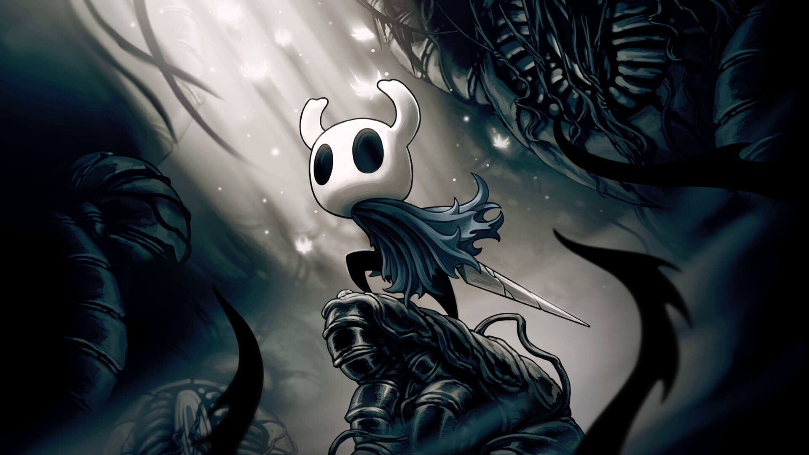
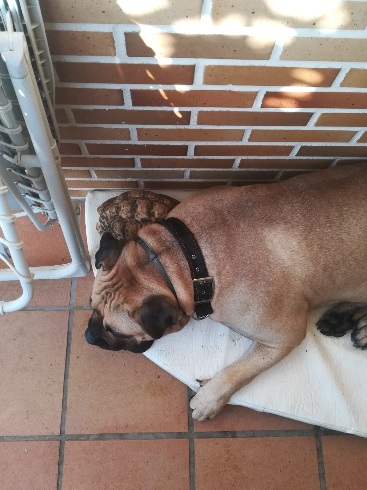

I hope reading this doesn't get boring! Thanks for coming!
About me
Hi, I'm Ana. I love spending my free time doing different hobbies and activities. I was born in Spain, although right now I'm doing a study exchange in Poland. City of Opole.
I am 22 years old and, although I am a woman of letters, I have spent my entire life preparing in the mathematical field.
I wasn't thinking about creating a website, and I don't even know what it should say, but it was a requirement to pass one of my Erasmus subjects, so I'll try to do my best.
I'm supposed to talk about myself and the things I do in my free time. The truth is that there is little to tell.
I have made a list in which I will explain a little about what I dedicate the time when I am not studying.
I am a university student, the surprise is that I have free time with which to do things.
My studies
Primary: School Medalla Milagrosa, Toledo, Spain (2003-2015)
Bachelor: IES Carlos III, Toledo, Spain (2015-2019)
I studied primary and secondary school at the same school, a small Catholic school.
Since my school did not offer high school, I started high school at a well-known institute in Toledo, studying international baccalaureate. However, that did not convince me,
so I took my second year of high school normally at that same institute. You will realize that I am a difficult girl to convince.
Currently, I am a student at the University of Castilla-La Mancha, specifically at the faculty located in the city of Toledo.
I have been studying Industrial and Automatic Electronic Engineering for four years, which means mathematics and programming almost all the time.
Next year, if all goes well, I should finish the race. In general, I didn't like it, but I looked for a career with job opportunities and I already knew what I was going to face.
Anyway, if I wanted to study something like that again, I think I would study at another university because I'm not happy with this.
I leave a link to the page of my university in Toledo, (Spain), in case you want to take a look.
This university has many courses available, as well as several faculties throughout the province of Castilla-La Mancha.
In Toledo, the most renowned career is law, which one of my friends is studying and is very happy with.
Besides studying here, I was also able to earn a little money. They offered me a scholarship in which, in exchange for working in the library of the humanities faculty,
I would have a small salary thanks to which, with everything I saved, I have been able to afford Erasmus in Poland. Yes, I am an engineer whose only work experience has been
in a library and, I must say, I really liked the experience. Everyone was very friendly and I discovered that public-facing jobs would be good for me.
A curious fact to mention is that my faculty used to be a weapons factory!
I'm going to put several before and after images from university.
Before:
After:
My Hobbies
As I mentioned before, I don't have much free time. That means that what I call a hobby is actually an activity that I do more than once when I see that I have a
little time available for this.
I have created a small list with those activities that I usually do, and in each section I will talk a little about each thing. Among these things I include activities
such as reading, writing, physical activities... things like that.
I love immersing myself in exciting stories and learning new things through reading!
I usually read fantasy books, adventures, fiction... I prefer novels, although I also like to learn about history. The only books I don't usually like
It's romantic novels or things like that.
I also like to read Spanish comedy comics, whose characters I usually use to finish the power points they send me at the university, as well as those of others
comics known worldwide, such as Asterix and Obelix, Snoopy, Calvin and Hobbes, Captain Thunder...
As a personal recommendation, I am going to recommend the Spanish comics of Mortadelo and Filemón. They are the most famous in Spain, so much so that when their author
(Ibáñez) died, they put traffic lights in commemoration of them in Cataluña.
Another lesser-known Spanish recommendation is Carpanta comics. A poor man who loves to eat!
As for comics, mangas are not my style.
A reading recommendation for a book is going to be the book:The name of the Wind. If I had to choose a book as my favorite, it would be this one. The only downside
The thing is that the third part of this saga has not come out and it will take a while to come out. Its author is like the game of thrones´s one in that sense.
A very well-known Spanish youth writer that I really liked is Laura Gallego. Also recommended. I have liked almost all of his books, so I wouldn't know which one to recommend
so I'm going to say the last saga I read, Axlin's bestiary.
Hiking
Exploring nature and enjoying the outdoors is one of my passions. I'm always ready for an adventure in the mountains!
When I am outdoors I feel very calm, and it is the way of doing sports that I like the most. If I could live in the mountains, I would.
Also, I really like animals, so every time I see one in the wild it makes me very excited. I would love to see more.
I'm going to show how much I like animals, although this is not in the mountains but hey, it's my website and I can do whatever I want:
If the place I go, in addition to the mountains, also has good views of the sea, you are giving me the best gift you could give me!
Spain has good places to go hiking, but it is too hot in summer, so looking for other destinations in other countries would not be a bad idea.
Now here are the samples of my exploits walking through nature!
Cooking sweets
Experimenting in the kitchen is my art form. I love trying new recipes! Although I only experiment with sweets.
Yes, sugar is my biggest sin. For this reason, every time I cook something, I usually want to have people around me, so I don't eat it all myself.
I don't have much experience in cooking, because that requires a lot of time.
So far, I have experimented with truffles, cakes, muffins and jellies.
My two biggest hits were creations I made for 2 friends' birthdays. A cake, (the so-called sugar bomb), and some chocolate truffles.
The image above is the sugar bomb cake. I made it using white chocolate, milk chocolate, vanilla for the cake, nutella and the famous Knoppers.
I don't have a photo of the truffles but I do have one of myself making them:
Playing videogames
I really like to play Play Station or the PC. I usually look for new games to play! The problem is finding one that I like.
I usually like third-person action games, although I also enjoy open-world ones and metroidvania.
When I was little, I always watched my father play the original Resident Evil 4, so that game marked my childhood and that saga is one of my favorites. I have played
to almost all the games in that saga. It consists of a survival horror where you must fight against zombies and other types of enemies to survive. Also some like that,
like the last of Us, the evil within and Silent Hill.
OMG, I really love Leon Scott Kennedy hahahah
Now CAPCOM, developer of the Resident Evil video game saga, is releasing the remakes and they are killing it!
Another of my favorite games is Hollow Knight, which has nothing to do with Resident Evil. In this game you control a small 2D bug, with which you have to free
his world of an evil yoke that has it under control.
It is a very beautiful game, both for its colors and its ambient music, although its developer has a low budget, it was very successful.

Finally, another game that I really liked was Horizon Zero Dawn, where you control a girl who fights against large animal-shaped robots while she i discovering the
secrets of her world and her own existence.
Writing
Since I was little I have always liked to write. When I was in class and I got bored, I would take a pen and write in my notebook so the teachers thought I was paying attention.
My biggest dream is to get the book I'm writing published and for people to like it. I have already written more than 500 pages and I am dedicating all my energy to it.
I had a bad time when I was very sad, and writing helped me abstract myself from that sadness. In addition to a hobby, it is almost a therapy.
Apart from novels, he also wrote short stories and the occasional poem, although they are personal and I do not want to show them to the public at the moment.
I don't think that what I write is of great quality, but it has a mark on my heart and I am very proud to have finally managed to encourage myself to continue writing, because I
always ended up giving up.
Creating AI images
Through detailed descriptions I like to create the designs of my characters (those from the book that I previously said I am writing), using artificial intelligence
I started this hobby relatively recently, although I find it quite entertaining. However, I wish I knew how to draw, because then I would draw the character exactly as
I imagine it and not how the AI deduces it based on my description. The drawbacks are: 1. They are all handsome, it is difficult to get a normal or ugly character, and if it does,
it makes them very ugly. 2. There are things that no matter how much you tell it, it doesn't do them. For example, one of my characters has a cleft lip and he didn't want to wear it.
3. There are certain indications that are considered objectionable, even if it's just a wound on the arm or anything that the AI detects strange.
I'm not going to use these images for much more than for myself to remember the basic traits of my characters, but I find it very entertaining.
Some of my creations are:
DRÁCENA:It is about a goddess. This is my favorite image because he made it really look like an old mythology painting.
ACKE:This is my favorite character in the book. The AI made me decide to change his hair color.
Rybor:This is one of my supporting characters, but I liked the image.
Aila:One of the protagonists. The girl is pretty, but the AI made her extremely pretty.
Diving with my father
My father and I love to go diving in Jávea, a Spanish town perfect for diving along its seabed and beaches.
I have been diving with him since before I was 10 years old and it is a wonderful but sometimes dangerous experience.
You cannot dive without being aware of the risks. But if you know how to do it, you will discover a new world full of wonders that will be able to calm your heart.
You have to be careful to keep the equipment in good condition, be careful with the boats, with the fishermen's nets where you can get hooked and sometimes with the
sharks! The latter was a joke, the scare you get when you see a very large fish is more dangerous than that of the animal itself, although you have to be careful anyway.
The truth is that my father is a great diver. He knows a lot and has even found some anchors from archaeological sites that have been useful for the museum there.
I admire him a lot and I would love to dive as well as him one day.
As I was saying, I have seen wonderful creatures diving, from beautiful fish and playful octopuses, to manta rays and strange jellyfish.
I wish it were always summer so I could dive whenever I wanted!
I only have videos of the seabed, but I'm going to keep them for myself. If you want to see them, go in and dive too.
Watching TV series
Another thing I like to do is watch series. I've seen a lot. Since it is difficult for me to pay attention because I get bored very quickly, I usually watch series while I study.
I don't have a favorite type of series, if the series seems entertaining to me, I'll watch it. I have seen very famous series, as well as very little-known series, and there have been series
famous ones that I didn't like at all, and little-known series that I liked a lot, as well as the opposite cases.
Series that I really liked, but I am not going to give a synopsis because I think you have to see it to judge:
Preacher.I laughed a lot.
Penny Dreadful.Una trama muy interesante.
Orphan Black.Muy entretenida.
Recently I also started watching Korean series. They are not my favorites, but some were very good. I find Korean humor very funny, to be honest
The recommendation of this style will be Vincenzo,series with which I laughed a lot and that I enjoyed a lot.
My pets
Finally, another thing that I dedicate a good part of my time to is taking care of my pets, who are part of my family and whom I love very much.
Hi, I'm Marley. I don't look at the camera because I'm shy. Although I am a little aggressive with people I don't know, it's only because I'm afraid that they might hurt who I love.
I'm Ana's best friend! We love going for walks in the countryside, although then she has to clean my ears because they get full of flower petals.
I weigh 70 kg and sometimes I don't realize how much strength I have, although I try to be very careful and good with Ana because she loves me a lot.
Sometimes I like to pretend I'm an electrician.
Although what I like most is sunbathing and falling asleep anywhere
I like to sleep so much that sometimes I fall asleep in a bed that I don't even fit in!!!!
It was a pleasure to meet you, have a good day! I stay here sunbathing and playing with Ana.
Kenny & Cartman
Hello, we are Kenny and Cartman! 2 lovebirds named after 2 South Park characters!
The first photo is mine, Kenny. I've been with Ana since I was born, and I love her very much. I am a girl and I love bathing. I don't really like leaving the cage.
I love to eat and play with the toys I have. I have to admit that I have a very bad temper with everyone who is not Ana, even with Cartman, that's why we are in separate cages.
As you can see, I love Ana so much that I even give her kisses.
Cartman's case is more difficult. It was a wild bird and is afraid of people. Sometimes they let him out of the cage so he can fly around the kitchen, but they are afraid
that it escapes and does not return, because we are birds that could not survive long outside in Spain. Once he ran away and ended up coming back, he was hungry!
For the last photo, I sneaked into Cartman's cage, but not long because I get angry if he comes near me. I stole some food from him and left.
Maria Petunia
I am Maria Petunia! As you can see, yes, I am a turtle. Despite my name, everyone calls me Petu, because the name they gave me is a girl's name and I am a boy.
I have been with Ana since she was born, more than 15 years ago, and she was a little girl. I'm her oldest pet. I even met her two other puppies who already passed away and were my friends.
My routine is simple. I always take walks in the garden looking for food. As much. If I see someone in the garden, I chase them until they give me something to eat.
I am vegetarian. I eat vegetables and sometimes eggshells because calcium is very good for me. In winter I sleep almost all day.
That's me trying to eat one of the plants in the garden. Unfortunately, I couldn't reach it, but afterwards they prepared a delicious salad for me.
Before, I got along very well with Marley. We were very friends and we were always together! But I don't know what happened that now he can't even see me! We think he was stung by a wasp when I was
close him and now he thinks I hit him. A shame, because now Marley attacks me and since he was my friend, I can't resist trying to get closer to be with him. He tries not to look at me if he knows
I'm close because he doesn't want to do anything to me, but his instinct is so strong that if he ends up seeing me he comes after me. But I still love him very much. He's a big baby.

I say goodbye with a video of myself walking through the garden with Ana. A kiss!
Photo Gallery
Here I leave the images that can be seen larger in case anyone wants to see them. Have a nice day!